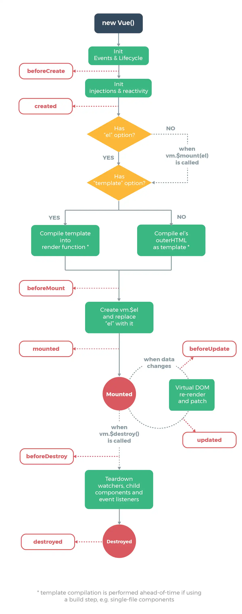

前言
框架是什麼?為什麼要用他?
在大型資料網站中直接使用HTML、JS顯示畫面及動畫功能時會因為龐大的分支頁導致維護困難及成本直線上升，如有一萬個頁面時改動其中一個共通佈局點時有可能要將這一萬個頁面的資料做更改，這是一個非常耗時間及做無意義事的成本，因此使用JavaScript框架可以有效解決這些問題。
目前JavaScript有三種主流框架，分別為Angular、React、Vue，本篇只針對Vue進行介紹，由於Vue有學習曲線低、輕量型等優點只要對HTML、CSS、JS有基礎認知幾乎都能在短時間內對Vue上手，相較於其他兩個框架Vue的入門門檻非常的低。
框架的優勢
目前三大框架的運作原理都是由資料驅動畫面，開發者只要透過修改資料就可以讓框架自動將畫面做變更，聽起來很神奇對吧?首先需要了解MVC以及MVVM架構。
MVC，M全名Model指資料處理、處理邏輯的部分，V全名View指管理畫面顯示的部分，C全名Controller指負責處理使用者與系統端的互動應用。
MVVM，這邊與MVC相比只有VM不同，VM全名ViewModel是負責資料與畫面綁定做呈現的部分，根據官方文件顯示Vue不完全是一個MVVM架構，但Vue的部分設計是受到它的啟發。
使用框架前我要準備什麼?
進入框架前請先確保已經對HTML、CSS、JS有基本了解，在Vue內需避免針對DOM的直接操作應該讓框架進行負責也符合MVVM的架構設定。
使用Vue前必須先進行導入，根據官方文件的解說可以使用以下的方式導入Vue
-
<script src="https://cdn.jsdelivr.net/npm/vue@2.6.14/dist/vue.js"></script> -
npm install -g @vue/cli
使用cdn的方式導入Vue檔案或者使用Vue CLI的方式進行安裝
使用前須先安裝node環境
Vue的完整運作流程
根據官方製作的圖片Vue的生命週期如下
看不懂嗎?沒關係，在入門時只要知道Vue是這樣再進行流程就可以了，而我們在Vue所做的一切動作都是遵循著這張圖的流程再進行。
建立Vue及綁定
由於本篇只針對Vue做簡單介紹，以下功能皆採用src的方式使用Vue，版本為2.6.14
在使用Vue之前必須先建立一個Vue實體以及告訴Vue負責的區域，特別注意如果再負責區域以外的地方使用Vue是無效的
-
<div id="app"> </div> <script> new Vue(){ el:'#app' } </script>
以上，就建立了Vue以及將負責區域綁定在#app裡面了，